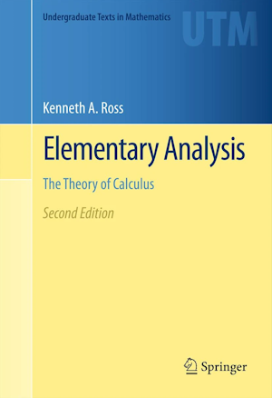

MATH 3100: Sequences and Series
MWF 1:50 PM-2:40 PM Boyd Research and Education Center, Room 304
406 Boyd
Office hours:
Monday, 3-5 PM
Wednesday, 3-4 PM
Friday, 3-4 PM
Assignments and other course material
Semester-to-date summary (reverse chronological order)
- 2/14 Proof of the Bolzano--Weierstrass theorem. Definition of a Cauchy sequence. Convergent sequences are Cauchy.
- 2/12 $\sqrt{2}$ is a real number via the Completeness Axiom. Preview: the Intermediate Value Theorem. Statement of the Bolzano--Weierstrass theorem. The definition of "peak indices" for a sequence.
- 2/9 Exam #1.
- 2/7 Ratio test. Why is $\mathbb{R}$ "better than" $\mathbb{Q}$?
- 2/5 Proof of the product rule. Quotient rule. Diverging to $\infty$ and $-\infty$.
- 2/2 If all $a_n \le U$, and $a_n \to A$, then $A \le U$. If $\{a_n\}$ is increasing with limit $U$, then each $a_n \le U$. Review of properties of absolute value. If $a_n \to 0$ and $\{b_n\}$ is bounded, then $a_n\cdot b_n \to 0$. Sum and difference rules for limits. Sketch of proof of product rule.
- 1/31 If $a_n \to L$ (with $L \in \mathbb{R}$), then every subsequence of $\{a_n\}$ converges to $L$. Behavior of geometric sequences.
- 1/29 Another example of proving limits from the definition. Convergent sequences are bounded. Statement that limits of convergent sequences converge to the same limit, and a relevant lemma.
- 1/26 Proving limits from the definition; e.g., $\lim \frac{n^2+n+1}{3n^2-5} = \frac{1}{3}$.
- 1/24 If $a_n=c$ for all $n$, then $a_n\to c$. If $a_n=1/n$ for all $n$, then $\lim a_n=0$. The sequence $\{(-1)^n\}$ diverges. If $a_n\to L$ and $a_n\to M$, where $L$ and $M$ are real numbers, then $L=M$.
- 1/22Eventually increasing. The sum of two eventually increasing sequences is eventually increasing. Motivating the definition of convergence.
- 1/19Bounded above, bounded below, and bounded. Reformulation of bounded: There is a real number $M\ge 0$ with $-M \le a_n \le M$ for all natural numbers $n$. Definition of subsequence. Examples. Subsequences of increasing sequences are increasing.
- 1/17Sequences as functions. The graph of a sequence. Increasing and decreasing sequences. $\{a_n\}$ increasing implies $a_n \le a_m$ whenever $n\le m$. Definitions of bounded above and below.
- 1/12Induction with a different base case. Strong induction (complete induction).
- 1/10Review of induction.
- 1/8Go over syllabus. What is a sequence?
Course synopsis
The UGA bulletin describes the content of MATH 3100 as follows (see also the CAPA description):
Precise definitions of limit and convergence concepts; practical tests for convergence of infinite series; power series representations and numerical error estimates; applications to calculus and explicit summation formulae; trigonometric series.
As far as topics are concerned, this is an adequate broad strokes description (although we may not cover all of these topics). However, that summary fails to capture the spirit of the course.
Our mission (should you choose to accept it) is to become reacquainted with sequences and series, and to carefully study the basic structural properties of the real numbers that make proving results about sequences and series possible. I say "reacquainted" because many of the topics we discuss will be ones you have met in calculus. While there will be a lot of common terminology, the emphasis in this course is likely to be very different than any calculus course you may have had so far. Calculus courses usually stress the ability to solve a wide range of problems. In this course, we will aim at depth rather than breadth. We will focus our attentions on more foundational issues, with the goal of developing a deep understanding of what's `really going on'.
A second raison d'être of this course is that you continue the mathematical apprenticeship which you begun in MATH 3200. This includes the construction of carefully reasoned mathematical proofs. You should not expect this to be easy; indeed, as you mature as a mathematician, you will find yourself confused a good deal of the time! (By the time you get to be a professional mathematician, you are constantly confused.) I will do my best to guide you through the difficulties and to help you come out the other side. Of course, this depends a great deal on your own engagement with the material --- both in class and in office hours.
Textbook
-

Elementary Analysis: The Theory of Calculus
by Kenneth A. Ross
Our primary resource will be the MATH 3100 course notes developed by UGA Professor Emeritus Malcolm Adams. You may download the notes here. These notes were written with this course in mind and we will follow them closely for the first two-thirds of the course. The Ross book listed above will be a resource for the final third of the course; you can access it for free as a UGA student.
Office hours
This is a difficult course! There is no shame (far from it!) in seeking help when you get stuck. I strongly recommend that you show up at office hours (times TBD); even better, show up and bring a friend! Note that these are intended as collaborative problem solving sessions. As such: You should expect me to give hints and to follow up on ideas you tried, not to simply telegraph answers.
Both at office hours and in class, you should expect that your input will be treated respectfully, by myself and by your classmates. Turning it around, you are expected to show respect and understanding for your classmates’ ideas. Kindness is important --- everywhere and always!
Exam dates
There are three in-class midterm exams as well as a final exam.
- Midterm #1: Friday, February 9
- Midterm #2: Friday, March 22
- Midterm #3: Friday, April 19
- Final exam: Wed, May 1, 12:00-3:00 PM (location TBA)
No make-up exams will be given. The final exam is cumulative.
Attendance/ Homework /Exam Policies
Your grade is made up of the following weighted components:
- Each midterm: 15% (total of 45%)
- Homework: 25%
- Final exam: 30%
You are expected to participate in class. In particular, attendance in this course is required. More than four unexcused absences may result in you being withdrawn from the course. Keep me posted whenever you have a conflict that requires you to miss class and this should not be an issue.
All exams are in-class, closed book, and closed notes.
Homework will be collected in class, about once each week. Late homework will not be accepted. (If you have a need to turn in HW early, that can be arranged.) Your lowest HW score will be dropped at the end of the term.
On homework, collaboration is allowed and in fact is very much encouraged. Mathematics wouldn't be nearly as much fun if we couldn't talk about it with other people! However, copying (from a textbook or another student), web searches, and AI tools (such as ChatGPT) are not allowed, and you must write your own final solutions independently. Keep in mind that by entering UGA, you have already agreed to abide by the UGA Honor code described in detail at https://honesty.uga.edu/Academic-Honesty-Policy/.
In practice, what this means is that you may discuss homework problems and their solutions with your classmates, but you may not turn in a solution unless you understand it yourself. A reasonable rule of thumb is that you should be able to explain your solutions verbally to me (in all their gory detail) if requested to do so.
Special accommodations
Students with disabilities who may require special accommodations should talk to me as soon as possible. Appropriate documentation concerning disabilities may be required. If you plan to request accommodations for a disability, please register with the Disability Resource Center. They can be reached by visiting Clark Howell Hall, calling 706-542-8719 (voice) or 706-542-877 (TTY), or by visiting http://drc.uga.edu.
Mental health and wellness
If you or someone you know needs assistance, you are encouraged to contact Student Care and Outreach in the Division of Student Affairs at 706-542-8479 or visit https://sco.uga.edu. They will help you navigate any difficult circumstances you may be facing by connecting you with the appropriate resources or services. UGA has several resources for a student seeking mental health services (https://caps.uga.edu/well-being-prevention-programs-mental-health/) or crisis support (https://healthcenter.uga.edu/emergencies/).
FERPA Notice
The Federal Family Educational Rights and Privacy Act (FERPA) grants students certain information privacy rights. See the registrar’s explanation at reg.uga.edu/general-information/ferpa/. FERPA allows disclosure of directory information (name, address, telephone, email, major, activities, degrees, awards, prior schools), unless requested in a written letter to the registrar.
Disclaimer
The course syllabus is a general plan for the course; deviations announced to the class by the instructor may be necessary.